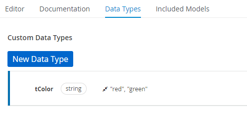
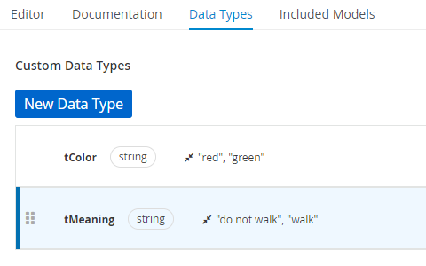
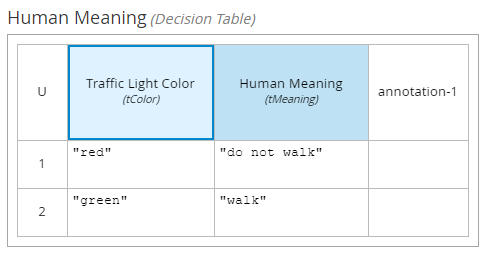

Smarter Decision Tables Generation through Data Types Constraints
The Decision Model and Notation (DMN) is an effective, yet standardized, tool for designing complex decisions, in special decision tables. Even though you, DMN developer, already knew about the existence of this capability, here’s something you didn’t know: there is a new DMN Decision Table column data type constraint enhancement in the DMN Editor. Let’s check all about this new feature (DROOLS-4640), available in the KIE Business Automation Tools starting version 0.27.0, that can facilitate and speed up the design and authoring of decision tables.
In this article, you will understand when and how to use this new DMN feature part of the Business Automation Tools under the KIE community. As well described in the IBM Business Automation Open Editions documentation, according to DMN specification, we can use data types to determine the structure of the data that we want to use within an associated decision table, column, or field in the boxed expression. Other than the default DMN data types (such as String, Number, Boolean) we can create custom data types to specify additional fields and constraints.
TIP: SHOULD I USE CONSTRAINTS IN MY MODELS?
We do not apply constraints in real world so often. We have infinite amount of colors, places, vendors, etc.. However as DMN developers, we restrict the domain usually. Here we will develop DMN traffic lights example where we will check just red and green color. Yes, we know that some countries may use also orange one and some other traffic lights may use totally different colors. However it is just a proof that as DMN developers we need constraints.
Now, looking back to the way we used to work with decision tables, there was the need to manually synchronize every decision table column with the constraints of data types being used. Fortunately, from now on: the Decisions Editor is responsible for synchronization automatically during the first generation of the decision table.
From this point on, we have a great feature at hand to help us out, but it is important to keep in mind that the editor does not synchronize all your following changes in Data Types and in the Existing Decision Table. In other words, the synchronization will help you out the first time you generate a decision table.
Now, let’s see how we can use these new decision table capabilities.
REQUIREMENTS
In order to try out this enhancement, you will need one of the environments from the table below:
| VS Code IDE v9.9+ with DMN Editor VSCode Extension 0.27.0, by KIE |
| The KIE sandbox online editor |
Now, let’s understand a bit more about the usage of constraints and how to set them up.
HOW TO DEFINE DATA TYPE CONSTRAINTS
So we need data type constraints. In the DMN Editor, we have a separate Data Types tab that allows us to manage the data types.
You can find detailed information and how-to-use guides available not only in our other posts, but in the community documentation as well.
To get started, design a new data type tColor like below:

If we look more precisely, it contains just two colors (red and green) that are allowed values of tColor data type.
Now that we have defined our data type, we can proceed to use DMN to design the Traffic Lights decisions. The Traffic Lights decisions will be represented in what is called a Decision Requirement Diagram (DRD).
DESIGNING THE DECISION TABLE
In regards to the logic of the decision table we will author, we can consider as an input the color of the traffic light, which is either red or green:
| When this decision is a red color, we can not walk. |
| When there is a green color, we can walk. |
Next, DMN allows us to define additional data types with a constraint – tMeaning. Let’s see how to do it below:

So we have the data type tMeaning and two constraints that define which are the allowed values, in this case, “do not walk” and “walk”. Probably you already have an idea of how it is related to “red” and “green” colors.
Moving forward, let’s look at the DRD. The main diagram will contain just two nodes that can be configured as follows:
| The first node is an Input Data node. The Input Data node represents the color of the traffic light. |
We can set its type reference as tColor, according to its business meaning. |
| Add a new Decision Node that will help us figure out which is the meaning of the received input traffic light color. |
| Connect the Input Data and the Decision node. |
The Decision Node: represents the meaning. This is where our custom type tMeaning becomes useful! Now, we should set the decision type reference as the type tMeaning. |
At this point, we have two connected nodes with types set and we miss the last, but not least, thing, and it is a decision table with column data type constraint.
Now comes the fun part which we can see the new capability in action.
AUTOMATICALLY DECISION TABLE GENERATION
The DMN Editor is now able to pre-generate each column of the decision table based on the information requirements of each node. By defining the constraints in our custom data type, and configuring the table to this data type, we allowed the editor to automatically abstract which information could be part of the decision table, saving us some extra time! The only task is then to simply define two rows of the decision table.
See the demanded result below:

In case you are still asking yourself, “So where is the promised enhancement?”, we want you to notice that until now, we have done a lot of manual configurations. However, if you check column header details, you will realize, the column data type constraint was automatically set. Simply click “Traffic Light Color” or “Human Meaning” cells and check the properties panel properly.
The data type constraint proper configuration in the decision table’s header details is essential for an efficient decision table gap analysis.
FEATURE EXTRA POINTS: GAP ANALYSIS
Let’s say during the design phase, we forgot to handle one of the traffic light colors in our decision table. Thanks to column data type constraint, the tooling is now able to detect we are missing the validation of one data. This happens in the background, and as you are authoring your decision, the analysis of the model is running. Luckily, we can be assured that the tool has us covered, as it will display a message warning about exactly which light traffic color we forget to handle in our decision table.
The full sample, including the complete diagram source code, is available as a gist here.